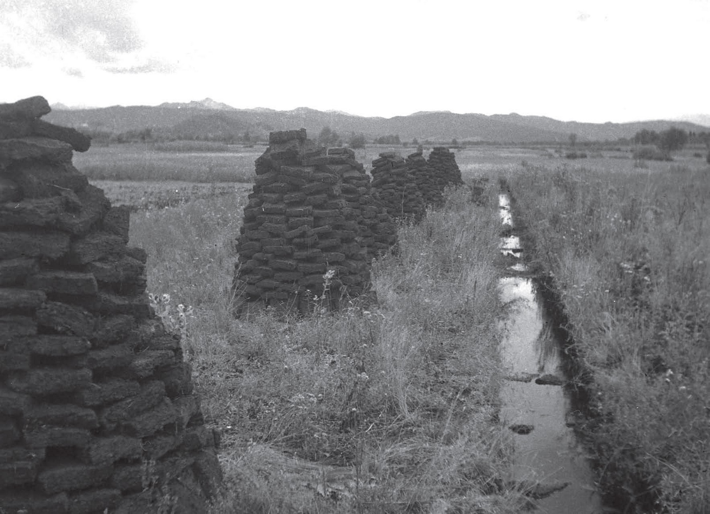
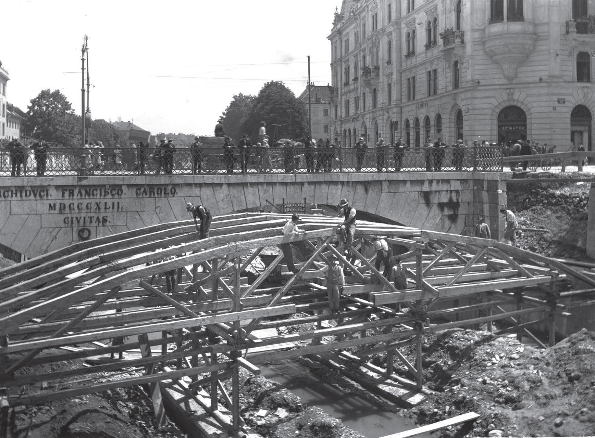
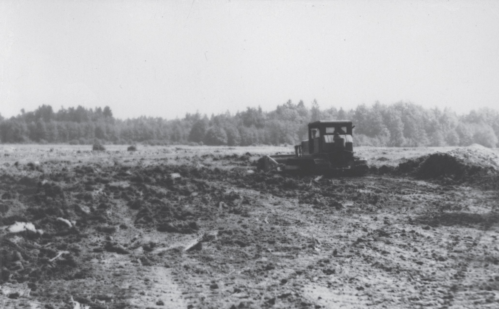
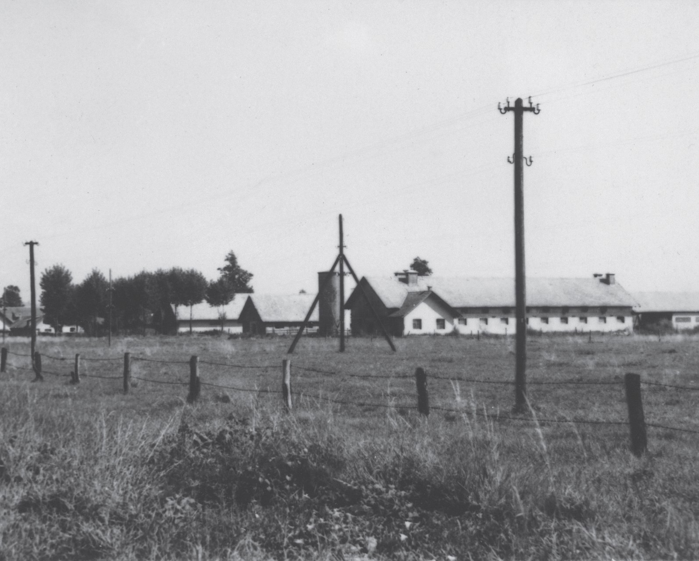

Even at the beginning of the 18th century, the Moors presented a gloomy picture. At that time, there were 52 streams and canals in the moors, and all the runoff was directed to a single location: Ljubljana.
The first significant interventions in the area began with large-scale land reclamation works in the second half of the 18th century when the marshes began to be converted into fields and meadows. The main goal was to drain the Ljubljana Moor, transform the marshes into a dry plain and create fields and meadows due to the intensive agricultural use of the land. The process, which involved long-term changes and repeated environmental interventions, can be traced back to the end of World War II.
Regulating the drainage channels failed due to financial constraints and poorly organised maintenance. Farmers were faced with insufficient production, which led them to look for alternative sources of income. In the late 19th century, layers of peat were cut for firewood or burned as fertiliser, often decomposing in the air. The intensive peat extraction, sold to entrepreneurs and residents in Ljubljana, caused considerable damage and, combined with neglected canals, led to frequent flooding in the region. In 1877, the Main Committee for the Drainage of the Ljubljana Moor was established. The members were residents of the marshes who were directly interested in adapting the area. The Main Committee prepared a new project in 1880, implemented between 1908 and 1914. The project was interrupted due to World War I but continued in the 1930s.
The Society for the Promotion of the Cultivation of the Ljubljana Moor was operating in the first decade of the 20th century. The aims of the society included organising meetings, publishing educational material, holding training courses, conducting cultivation trials and supporting members in the procurement of agricultural goods.
The floods in the area were often the cause of human intervention. After the flood disaster of 1926, the authorities noted the need to complete the regulation work. The project included reshaping the riverbed of the Ljubljanica in the city, building river walls and constructing a sluice gate under the Šentpeter Bridge. Except for the sluice gate, all works were completed by 1938, and the construction of the lock was finished between 1939 and 1942.



